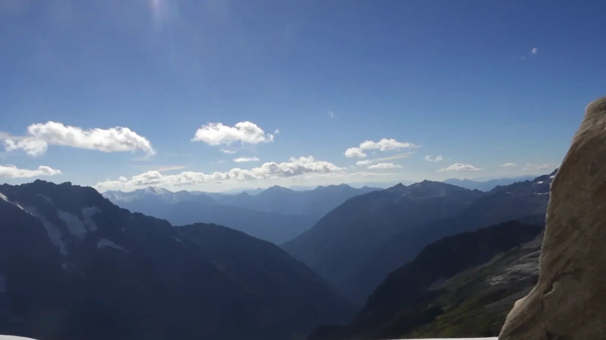

Stone and Ice
For Labor Day weekend I went back to the North Cascades, this time up into Boston Basin, the bowl where climbers base themselves for peaks like Sharkfin Tower. If you want to camp in the backcountry here, you need a permit, so stop at the ranger station in Marblemount on the way up. I drove in on Saturday evening as the sun sank low enough to lay a long shadow across a forested peak. The next morning I started up a gravel road that soon narrowed into a trail, and the walls began to close in. Granite rose on both sides with snow still clinging to the gullies, and the sun lit the spires long before it reached me on the valley floor. Creeks and cascades crossed the path one after another, and I lost count of the little waterfalls.
Sunday was all blue sky and granite. Eventually the trees gave way to boulders and bare slabs with meltwater sheeting down them, and then the basin opened up. Ice carved this whole bowl, and a little of it is still hanging around. A glacier clung to the foot of a jagged gray ridge, and the meadow below was already turning yellow for fall. A marmot lounged on a boulder among the wildflowers.

Up on the snow, the surface was streaked with pink. I had no idea snow could do that! It was probably watermelon snow, an alga that blooms on old snow late in the summer, which means even the snow was alive. A crevasse split the snowfield nearby, dark and deep, and beside it rose a wall of rock stained the color of rust, as if the mountain were slowly oxidizing. The glaciers here have been shrinking for decades, so I'm glad I got to see some of that ice.
I'd pitched my tent in the basin, and on Monday morning I unzipped the door to find the valleys filled with cloud and only the tops of the peaks standing above it, like fins cutting through a white sea. Fitting for a place called Sharkfin Tower. White wildflowers dotted the rocks around camp, and I watched the clouds boil and shift, hiding a peak for a minute and then handing it back as if nothing had happened. Labor Day usually means a barbecue. I spent mine in the clouds.